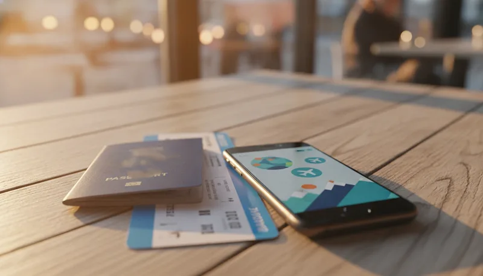

가을철 해외여행을 준비하면서 항공권 예매부터 현지 환전까지 비용 절감 방법을 찾는 여행객이 늘고 있습니다. 환전 수수료와 카드 해외 결제 수수료는 조금만 알아두어도 꽤 큰 금액을 아낄 수 있는 영역입니다. 2026년 10월 기준 하나카드 발표에 따르면, 트래블로그 서비스를 통해 이용자들이 절감한 누적 금융비용이 5,000억 원을 넘어섰을 정도로 해외여행용 특화 카드의 인기는 꾸준히 이어지고 있습니다. 여기에 트립닷컴 같은 온라인 여행사의 10월 프로모션 할인코드를 결합하면 항공권과 숙소 예약 단계에서부터 추가 지출을 줄일 수 있습니다. 해외 결제 혜택과 예약 할인에 관한 핵심 질문을 정리해 드립니다.

외화 충전 과정에서 발생하는 환전 수수료는 100% 우대 혜택이 적용되어 부담이 없습니다. 하나머니 앱을 통해 원화를 외화 하나머니로 충전할 때 별도의 환전 수수료가 붙지 않는 구조입니다. 현재 미국 달러(USD), 일본 엔화(JPY), 유럽 유로(EUR), 영국 파운드(GBP) 등 주요 4개 통화는 상시 무료 환전이 제공됩니다. 나머지 54개 통화 역시 2026년 12월 31일까지 진행되는 무료 환전 이벤트를 통해 수수료 없이 환전할 수 있어 총 58종의 통화를 현찰 환전보다 유리한 조건으로 이용 가능합니다. 다만 환율이 실시간으로 변동하므로 원하는 목표 환율을 미리 설정해 두고 자동 충전 기능을 활용하는 편이 유리합니다.
두 카드는 해외 결제 시 수수료 차단 방식에서 명확한 차이가 있습니다. 트래블로그 체크카드는 해외 가맹점에서 결제할 때 외화 하나머니 충전 잔액에서 즉시 차감되며 국제브랜드 수수료와 해외 이용 수수료가 모두 면제됩니다. 반면 신용카드의 경우 국내 결제처럼 신용결제 모드와 외화 하나머니 결제 모드를 앱에서 직접 선택할 수 있습니다. 수수료 면제 혜택을 받으려면 반드시 결제 방식을 외화 하나머니 결제로 지정해야 합니다. 신용결제 모드로 두면 해외 결제 수수료가 정상 부과되거나 가맹점 적립 혜택으로 대체되므로 출국 전 결제 설정 상태를 먼저 확인하는 과정이 필요합니다. 상세한 카드 발급과 운영 정책은 하나카드 공식 안내 페이지에서 찾아볼 수 있습니다.
여행 국가에 따라 제휴 브랜드 선택이 현지 지출 편의성을 크게 좌우합니다. 일본이나 미주, 유럽 지역에서는 마스터카드나 비자 브랜드 활용도가 높지만, 중국이나 일부 동남아 지역에서는 트래블로그 유니온페이 브랜드 카드가 현지 가맹점 및 결제망 연동에 훨씬 유리합니다. 중국은 현금이나 일반 해외 신용카드 결제보다 QR 기반 간편결제를 주로 사용하는 매장이 많습니다. 유니온페이 브랜드 카드는 현지 알리페이나 위챗페이에 등록해 사용하는 과정에서 결제 승인 오류 발생률이 낮고 현지 ATM 인출 접근성이 높습니다. 중화권 여행을 계획 중이라면 하나 트래블로그 카드를 발급받을 때 국제브랜드를 유니온페이로 선택하거나 마스터카드와 조합해 준비하는 방법이 효과적입니다.
하나카드 측에서 부과하는 해외 ATM 인출 수수료와 국제브랜드 이용 수수료는 면제됩니다. 하지만 현지 ATM 기기를 운영하는 해외 금융회사가 자체적으로 부과하는 기기 이용 수수료(Surcharge)는 별도로 발생할 수 있습니다. 이를 피하려면 방문하는 국가별로 현지 기기 수수료가 면제되는 제휴 ATM망을 사전에 파악해 두어야 합니다. 예를 들어 일본에서는 세븐일레븐 매장 내 세븐뱅크(7 Bank) ATM을 이용할 때 마스터카드 브랜드 체크카드로 인출하면 현지 기기 수수료까지 면제됩니다. 베트남이나 대만 등지에서도 특정 은행 트래블로그 atm 이용 환경을 미리 확인해 두어야 수수료 지출을 차단할 수 있습니다.
여행 후 남은 외화를 원화로 환급할 때는 1%의 환급 수수료가 차감된 후 한국 원화 계좌로 입금됩니다. 이때 적용되는 환율은 원화를 살 때 기준이 아닌 전신환 매입률(송금받을 때 환율)을 따르기 때문에, 환전 당시보다 환율이 오르지 않았다면 환급 시 일부 손실이 발생합니다. 여행 마지막 날 무리하게 외화 하나머니를 과도하게 충전하기보다 현지에서 필요한 만큼만 실시간으로 충전해 소비하는 편이 환급 수수료 지출을 방지하는 방법입니다. 일부 통화는 별도의 환급 환율이 적용되기도 하므로 충전 전 앱 내 안내를 점검해 보는 것이 좋습니다.
트립닷컴에서 제공하는 10월 할인코드는 항공권이나 호텔 예약 시 결제 금액의 일정 비율 또는 고정 금액을 즉시 차감해 줍니다. 프로모션 코드를 입력해 1차로 숙소나 항공권 가격을 낮춘 뒤, 결제 수단으로 트래블로그 카드를 활용하면 해외 결제 시 부과되기 쉬운 해외 원화 결제(DCC) 수수료 및 카드사 해외 이용 수수료를 한 번 더 아낄 수 있습니다. 다만 트립닷컴과 같은 온라인 여행사 이용 시 결제 통화가 원화인지 외화인지에 따라 수수료 조건이 달라질 수 있습니다. 트래블로그 신용카드의 신용결제 모드를 활용해 여행 업종 적립을 받을지, 외화 하나머니 결제로 해외 결제 수수료를 아예 차단할지 예매 전 비교해 보는 선택이 합리적입니다.
여행 경비를 최적화하려면 예약 단계와 결제 수단 준비 순서를 체계적으로 잡는 것이 중요합니다. 진행 단계를 순서대로 정리하면 아래와 같습니다.
| 구분 | 주요 진행 내용 | 주의할 점 |
|---|---|---|
| 1단계: 항공·숙소 예약 | 트립닷컴 10월 할인코드 적용 후 최저가 검색 | 결제 통화(원화 vs 외화) 확인 |
| 2단계: 카드 발급 신청 | 여행지에 맞는 국제브랜드(마스터/유니온페이) 선택 | 실물 카드 배송 기간(5–10일) 고려 |
| 3단계: 외화 충전 | 하나머니 앱으로 목표 환율 설정 후 분할 충전 | 상시 무료 통화 외 이벤트 기한 체크 |
| 4단계: 현지 결제 및 출금 | 결제 모드 확인 및 현지 수수료 면제 ATM 이용 | 현지 기기 수수료 부과 여부 화면 확인 |
| 슬롯 | 위치 | 기준 블록 | 근거 |
|---|---|---|---|
🖼 이미지 1 news-20261026-2gse-01-intro.webp | 문단 1 뒤 | P · 가을철 해외여행을 준비하면서 항공권 예매부터 현지 환전까지 비용 절감 방 | 도입부 첫 문단 뒤(히어로) |
| 📢 광고 1 | 문단 7 앞 | H3 · Q. 중국이나 동남아 여행 시 트래블로그 유니온페이 결제가 더 유리한 이 | H2 앞 · 직전 광고와 — 간격 |
🖼 이미지 2 news-20261026-2gse-02-middle.webp | 문단 9 앞 | H3 · Q. 해외 현지 트래블로그 atm 출금 시 기기 수수료가 따로 붙는 경우 | 글자수 기준 중간에 가장 가까운 소제목 앞 |
🖼 이미지 3 news-20261026-2gse-03-end.webp | 문단 16 앞 | P · 여행 경비를 최적화하려면 예약 단계와 결제 수단 준비 순서를 체계적으로 | 마지막 문단 앞(마무리) |